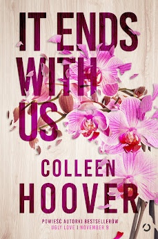
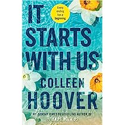
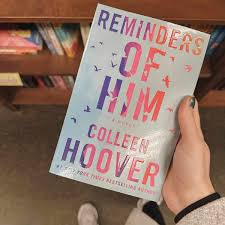

IT ENDS WITH US BY COLLEEN HOOVER
It Ends with Us is a book that follows a girl named Lily who has just moved and
is ready to start her life after college.Lily then meets a guy named Ryle and
she falls for him. As she is developing feelings for Ryle,Atlas,her first
love,reappears and challenges the relationship between Lily and Ryle.

Published on: February 29, 2016
ITS STARTS WITH US BY COLLEEN HOOVER
In “It Starts With Us,” Atlas and Lily attempt to rekindle the love they felt for
each other as teenagers, but must deal with the repercussions their love
may have now as adults.Hoover illustrates a beautiful,innocent love between
Atlas and Lily

Published on: October 18, 2022
REMINDERS OF HIM BY COLLEEN HOOVER
Reminders of Him (2022) is at once a conventional romance and a reimagination of
the genre. Kenna Rowan, age 26, returns to her hometown near Denver after being
in prison for five years.She is determined to have a relationship with her
rfour-year-old daughter, Diem Landry.

Published on: January 18, 2022
Comments